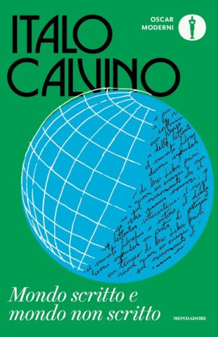

In occasione del centenario della nascita di Italo Calvino, Mondadori ha rivelato con entusiasmo le nuove copertine iconiche delle opere del celebre scrittore italiano. Questa speciale edizione commemora non solo l'immensa eredità letteraria di Calvino, ma anche la sua continua influenza nel panorama letterario mondiale.
CELEBRAZIONE DEL CENTENARIO DI ITALO CALVINO:
Le nuove copertine
Da "Il sentiero dei nidi di ragno" a "Le città invisibili" e oltre, ogni titolo assume una nuova vita visiva che rispecchia la contemporaneità senza perdere il legame con l'eredità classica di Calvino.
 Le nuove copertine sono un tributo alla genialità e alla versatilità di Calvino, con design accattivanti e innovativi che catturano l'essenza unica di ogni opera. Ogni copertina è stata curata con attenzione ai dettagli, riflettendo il contenuto e lo spirito dei libri che ha scritto, con l'obiettivo di reinterpretare visivamente i temi e i concetti che permeano le opere di Calvino.
In conclusione, questa collezione di nuove copertine non solo celebra il passato di Calvino, ma guarda anche al futuro, ispirando una nuova generazione di lettori e appassionati di letteratura a esplorare il suo straordinario universo letterario. È un omaggio significativo a un autore che continua a incantare e stimolare l'immaginazione di lettori di tutto il mondo, a un secolo dalla sua nascita.